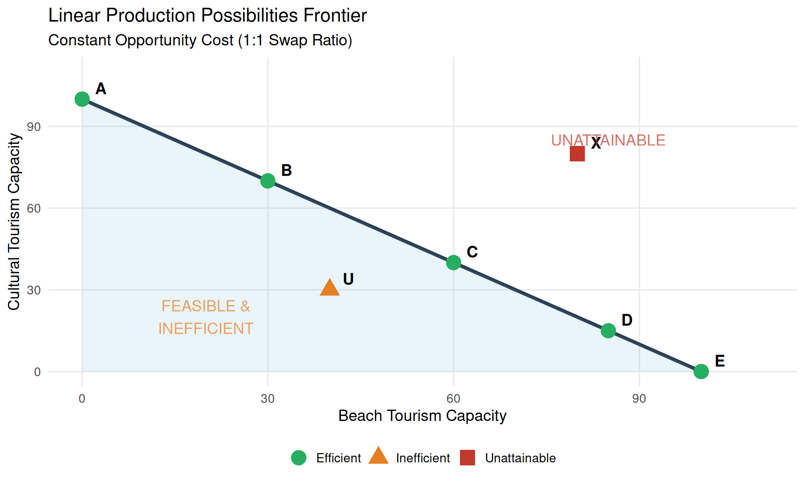
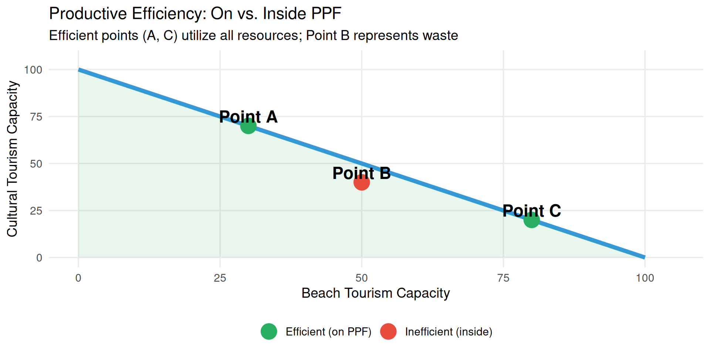
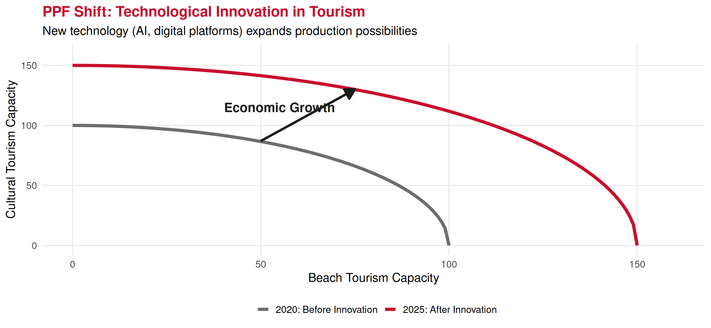
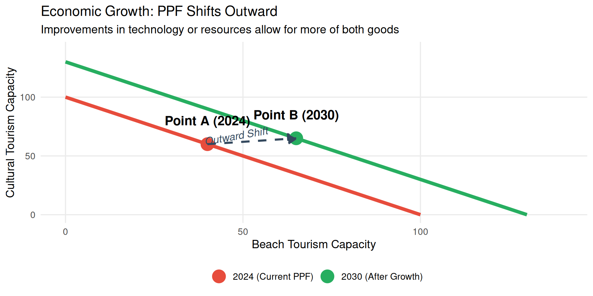
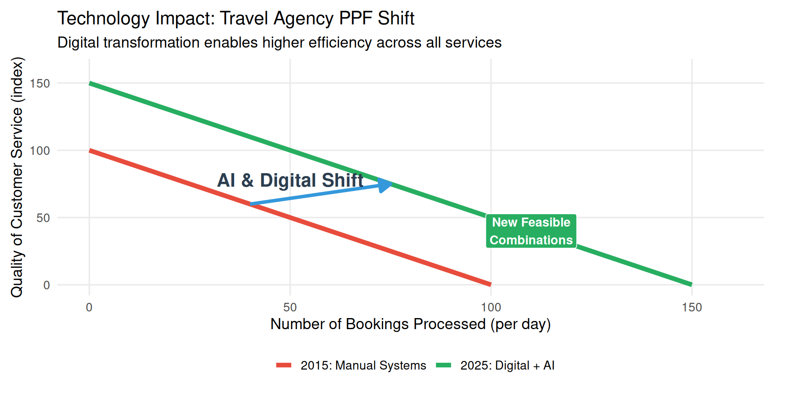

Economics Fundamentals
Lecture 4: Production Factors & Production Possibilities Frontier
2026
Recap: Lecture 3 ⏪
Key Concepts from Last Class:
🧠 Rationality: Cost-benefit decision making
📈 Marginal Analysis: Decisions at the margin (MB vs MC)
💰 Opportunity Cost: Value of best alternative foregone
🚫 Sunk Costs: Ignore them in decisions!
🎯 Today: We build on opportunity cost to understand:
- Production factors (inputs)
- Production Possibilities Frontier (PPF)
- Society-level trade-offs and efficiency
Production Factors
The Three Main Inputs 🏭
Production Factors
To produce goods and services, economies use three main factors: Land (natural resources), Labor (human effort), and Capital (produced goods used in production).
Land 🌿
- Agricultural land
- Minerals & energy
- Water resources
- Natural beauty
- Climate
Tourism: Beaches, mountains, heritage sites
Labor 👥
- Physical work
- Mental work
- Skills & training
- Time & effort
- Entrepreneurship
Tourism: Staff, guides, managers, chefs
Capital 🏢
- Buildings
- Machinery
- Infrastructure
- Technology
- Equipment
Tourism: Hotels, planes, booking systems
Factor Payments 💸
Each factor receives compensation:
| Factor | Payment Name | Example in Tourism |
|---|---|---|
| Land | Rent | Payment for beach concession, property lease |
| Labor | Wages/Salaries | Hotel staff wages, tour guide fees |
| Capital | Interest | Return on hotel investment, equipment loans |
| Entrepreneurship | Profit | Hotel owner’s profit, airline earnings |
Tourism Production: Example 📊
Hypothetical illustration of factor intensity
💡 Insight: Cruise tourism is capital-intensive, cultural tours are labor-intensive, beach resorts balanced
Production Possibilities Frontier (PPF)
What is the PPF? 🗺️
Production Possibilities Frontier (PPF)
The PPF shows the maximum combinations of two goods an economy can produce given fixed resources, current technology, and full employment.
Key Insight 💡
With scarcity, producing more of one good requires producing less of another
→ This is opportunity cost visualized!
Simple PPF Example: Tourism 🏖️
Imagine an economy producing only:
- Beach Tourism (hotels, resorts)
- Cultural Tourism (museums, tours, heritage sites)
Interpreting the PPF 🔍
Point A (0, 100): All resources → cultural tourism, no beach tourism
Point E (100, 0): All resources → beach tourism, no cultural tourism
Point C (60, 40): Mixed economy, balanced allocation
Point U (40, 30): Inefficient — inside PPF
- Resources unemployed or misallocated
- Could produce more of both goods!
Point X (80, 80): Unattainable — outside PPF
- Not enough resources with current technology
- Would need economic growth
Moving Along the PPF ➡️
From B (30, 70) to C (60, 40):
✅ Gain: 30 units of beach tourism
❌ Loss: 30 units of cultural tourism
💰 Opportunity Cost: 30 cultural units
Key Point 🔑
- Moving along PPF = reallocation of resources
- All points on PPF are efficient (no waste)
- But different distributions (different answers to WHAT question)
- Trade-offs are unavoidable!
Bowed-Out PPF: Increasing Opportunity Cost 🔄
💡 Why bowed out? Resources aren’t perfectly adaptable — some resources are better suited for beach tourism, others for cultural tourism
Calculating Opportunity Cost on PPF :calculator:
Example: Moving from C to D
Point C: (40 beach, 92 cultural)
Point D: (60 beach, 80 cultural)
Change:
- Gain: 20 beach units
- Loss: 12 cultural units
Opportunity Cost:
\[OC = \frac{\text{Units Lost}}{\text{Units Gained}} = \frac{12}{20} = 0.6\]
👉 Each additional beach unit costs 0.6 cultural units
Compare: D to E
- Gain: 20 beach (60→80)
- Loss: 20 cultural (80→60)
- OC = 20/20 = 1.0 (higher!)
💡 Opportunity cost increases as we specialize more
Economic Growth & PPF Shifts
Shifting the PPF Outward 🚀
Economic Growth
An outward shift of the PPF represents economic growth — the ability to produce more of both goods. Caused by: more resources, better technology, or improved productivity.
Three ways to shift PPF outward:
⬆️ More resources (population growth, discover new land)
💡 Better technology (innovation, improved processes)
📚 Human capital (education, training, skills)
PPF Shift Example 📈
Investment Trade-off: Present vs Future ⚖️
Key Economic Decision: Consumption today vs. Growth tomorrow
More Consumption Goods Today
✅ Higher current standard of living
✅ Immediate satisfaction
❌ Less investment in capital
❌ Slower future growth
More Capital Goods Today
✅ Faster PPF outward shift
✅ Higher future production
❌ Lower current consumption
❌ Sacrifice today for tomorrow
💡 Tourism Example: Build hotels now (consume less) → More capacity future → Higher tourism revenue later
Investment Trade-off Visualization 💰
Tourism Investment Example 🏨

👉 Strategic choice: Prioritize long-term growth (infrastructure, digital) despite lower immediate returns
Technological Change Example 💻

PPF Summary: Key Insights 📑
1️⃣ Shows maximum production given resources & technology
2️⃣ Points on PPF = efficient (can’t produce more without trade-off)
3️⃣ Points inside PPF = inefficient (unemployment, waste)
4️⃣ Points outside PPF = impossible (currently unattainable)
5️⃣ Moving along PPF = reallocating resources (opportunity cost)
6️⃣ Shifting PPF outward = economic growth (more resources, better technology)
7️⃣ Investment trade-off = consumption today vs. growth tomorrow
Real-World Applications 🌍
PPF thinking helps answer:
❓ Should Portugal build more hotels or preserve more heritage sites?
❓ How much should airlines invest in fuel efficiency vs. passenger comfort?
❓ Trade-off between mass tourism revenue and sustainable tourism?
❓ How much GDP to allocate to tourism vs. other sectors?
💡 All involve opportunity costs and efficiency considerations!
Complete Picture: Integration 🧩
Today’s Lecture Integration:
1️⃣ Production Factors (Land, Labor, Capital) are scarce inputs
2️⃣ Scarcity forces choices between alternatives
3️⃣ PPF visualizes society’s production possibilities
4️⃣ Opportunity Cost = moving along PPF (what’s foregone)
5️⃣ Efficiency = operating on (not inside) PPF
6️⃣ Economic Growth = PPF shifts outward
7️⃣ Investment today enables faster growth tomorrow
🔗 This connects to: Lecture 3 (opportunity cost), Lecture 2 (WHAT/HOW/FOR WHOM), Lecture 1 (scarcity & efficiency)
Exercises 📝
Application Time!
PPF and opportunity cost calculations.
Exercise 1: Multiple Choice
An economy is producing at a point INSIDE its PPF. This indicates:
A. The economy is efficiently using all resources
B. The economy has economic growth
C. There is unemployment or resource misallocation
D. It’s impossible to produce more of any good
Answer: C - Inside PPF means inefficiency — resources are unemployed or misallocated. Could produce more of at least one good without sacrificing the other (move toward frontier).
Exercise 2: Multiple Choice
A country’s PPF shifts outward. This could be caused by:
A. Higher unemployment
B. Decrease in the labor force
C. Technological innovation
D. Producing less capital goods
Answer: C - Outward PPF shift = economic growth. Caused by: more resources, better technology, improved productivity. Options A, B, D would shift PPF inward or cause movement inside PPF.
Exercise 3: Open Question - Setup
Scenario: The Portuguese Algarve region has limited land and labor. It can allocate resources between golf tourism and beach tourism. Current production possibilities:
| Combination | Golf Resorts | Beach Hotels |
|---|---|---|
| A | 0 | 50 |
| B | 5 | 48 |
| C | 10 | 44 |
| D | 15 | 38 |
| E | 20 | 30 |
| F | 25 | 0 |
Exercise 3: Questions
Questions:
Draw the PPF with Golf Resorts on x-axis, Beach Hotels on y-axis
Calculate the opportunity cost of moving from:
- Point B to Point C
- Point D to Point E
Does the PPF exhibit increasing opportunity costs? Explain.
If region currently operates at point U (12 golf, 30 beach), what does this indicate?
A new tourism development technology is invented. How would this affect the PPF? Draw the new curve.
Exercise 3: Solution - Part a (PPF Graph)
a) The PPF shows all efficient combinations (points A-F) and the bowed-out shape indicating increasing opportunity costs.
Exercise 3: Solution - Part b
b) Opportunity Cost Calculations:
B → C (5 golf → 10 golf): \[\text{Gain in Golf} = 10 - 5 = 5 \text{ resorts}\] \[\text{Loss in Beach} = 48 - 44 = 4 \text{ hotels}\] \[\text{Opportunity Cost} = \frac{4 \text{ hotels}}{5 \text{ resorts}} = 0.8 \text{ beach hotels per golf resort}\]
Exercise 3: Solution - Part b continued
D → E (15 golf → 20 golf): \[\text{Gain in Golf} = 20 - 15 = 5 \text{ resorts}\] \[\text{Loss in Beach} = 38 - 30 = 8 \text{ hotels}\] \[\text{Opportunity Cost} = \frac{8 \text{ hotels}}{5 \text{ resorts}} = 1.6 \text{ beach hotels per golf resort}\]
Exercise 3: Solution - Part c & d
c) Increasing Opportunity Costs?
YES! Opportunity cost increases from 0.8 (B→C) to 1.6 (D→E).
Explanation: As more resources shift to golf, we use resources less suited for golf (originally better for beaches). Each additional golf resort requires sacrificing more beach hotels.
d) Point U (12 golf, 30 beach):
This is INSIDE the PPF (compare to point D: 15 golf, 38 beach).
Indicates:
- Inefficiency (unemployment or resource misallocation)
- Could produce more golf without reducing beach (move to D: 15 golf, 38 beach)
- Could produce more beach without reducing golf
Exercise 3: Solution - Part e
e) New Technology Effect:
Technology shifts PPF OUTWARD (economic growth).
New PPF might be:
| Combination | Golf Resorts | Beach Hotels |
|---|---|---|
| A’ | 0 | 60 (+10) |
| C’ | 12 | 55 (+11) |
| E’ | 24 | 38 (+8) |
| F’ | 30 | 0 (+5) |
Effect: Can now produce MORE of both types of tourism with same resources!
Graph: Draw original PPF, then new PPF further from origin (parallel or biased depending on where technology applies).
Next Lecture 📚
February 19, 2026: Budget Set and Budget Constraint
💡 Preparation: Think about how you allocate your own limited budget across different goods!
Thank You! 👋
Questions?
📧 paulo.fagandini@ext.universidadeeuropeia.pt
Next class: Thursday, February 19, 2026
Economics of Tourism | Lecture 4